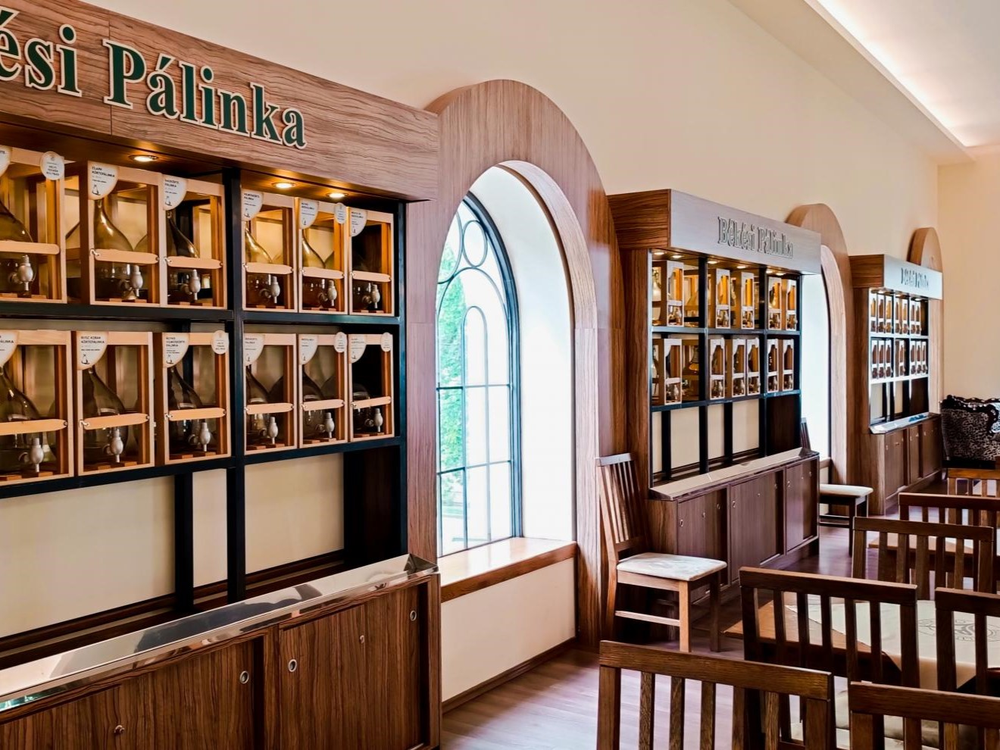
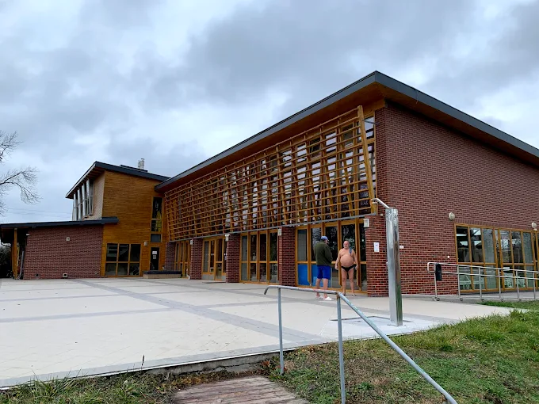
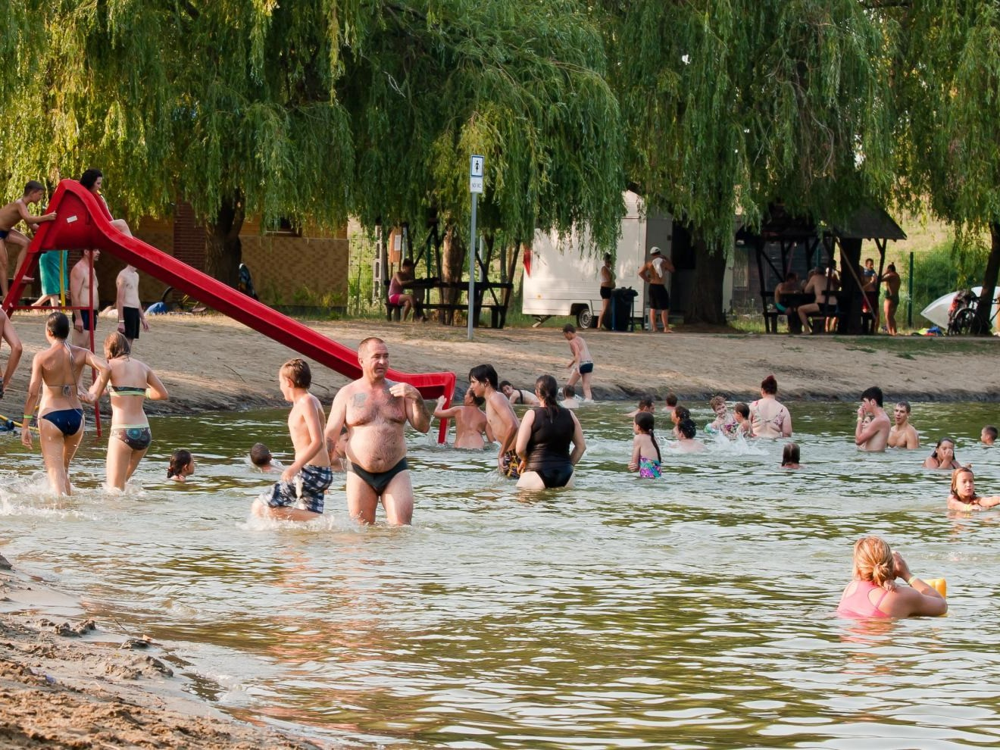
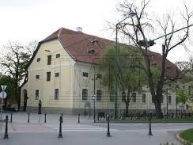
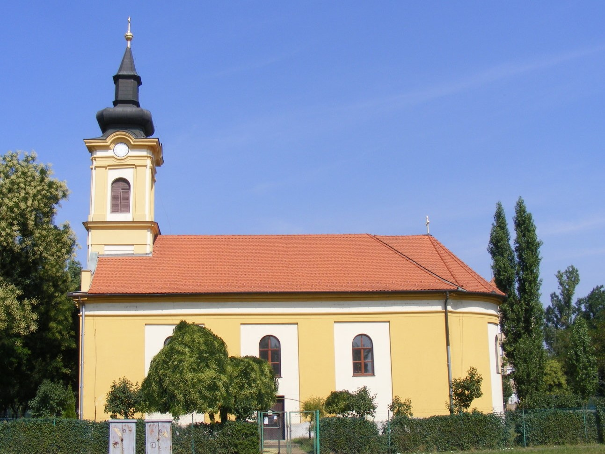
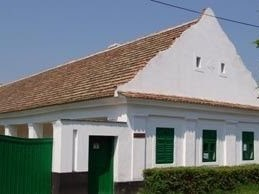
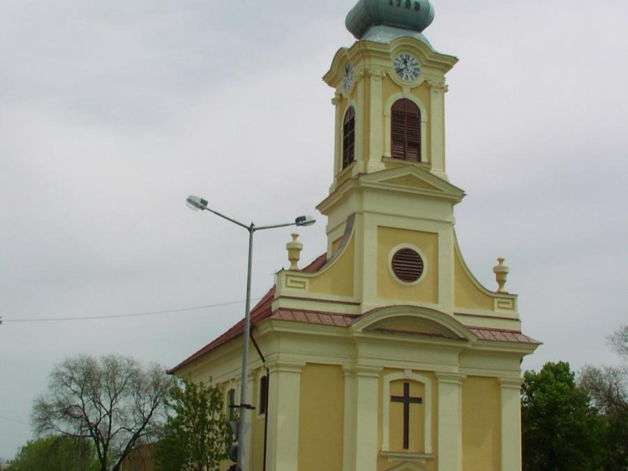
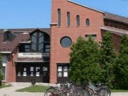

Békési Pálinka Centrum
Békési Pálinka Centrum Látogasson el hozzánk, ahol mindent megtudhat a Békési Pálinkáról. Az állandó kiállításunkon megismerkedhet a Békési család történetével, az épület szolgáltatásaival és a pálinka hagyományaival.
További info

Békési Gyógyfürdő
Az üdülőközpontunk kiváló helyszínéül szolgál gyermek-és ifjúsági táboroknak, osztálykirándulásoknak, sport-és edzőtáboroknak, céges, baráti, valamint családi összejöveteleknek, kulturális rendezvényeknek, gólyatáboroknak, illetve biciklis és vízi túráknak egyaránt. Az itt található strand és kikötő a mindenkori kikapcsolódáshoz járul hozzá.
További info

Dánfoki Üdülőközpont
Az üdülőközpontunk kiváló helyszínéül szolgál gyermek-és ifjúsági táboroknak, osztálykirándulásoknak, sport-és edzőtáboroknak, céges, baráti, valamint családi összejöveteleknek, kulturális rendezvényeknek, gólyatáboroknak, illetve biciklis és vízi túráknak egyaránt. Az itt található strand és kikötő a mindenkori kikapcsolódáshoz járul hozzá.
További info

Jantyik Mátyás Múzeum
A Jantyik Mátyás festőművész nevét viselő békési múzeum folyamatosan gyarapítja vele kapcsolatos gyűjteményét, jelenleg 18 festményét és 108 db rajzát őrzi.
További info

Görögkeleti templom
Érdekes látnivaló a Bartók Béla úti lakótelepi épületegyüttesben álló görögkeleti templom. Görög, román és szerb hívők építették 1837-38 között késő barokk- és empirestílusban. Az 1780-as évekből való ikonosztázát az Arad-megyei Siklóról hozták. A karzat feletti tornya barokk vonalú, párnatagos sisakkal.
További info

Békési Tájház
Csapó Gergely tanyásgazda tulajdona. Karéjos homlokzata, négyszögoszlopos, darufás tornáca, övpárkánya és dór lizéniái vannak az épületnek. A tájházban a parasztgazdaság összegyűjtött emlékeit, berendezési tárgyait, eszközeit tekinthetik meg..
További info

Szentháromság-templom
A templom 1792-95 között épült copfstílusban. A templombelsőben a stációkat és a Krisztus megkeresztelése című képet Orlai Petrich Soma készítette. Főhomlokzatát timpanonos diadalív koronázza. Berendezése egységesen copfstílusú. A templom mellett 1824-ből való kőkereszt áll, tömött vörös mészkőből.
További info

Kecskeméti Gábor Kulturális Központ
A Békés Városi Kulturális Központ, Könyvtár, Múzeum és Sport Nonprofit Kft. szórakoztató programokkal, előadásokkal, zenés, táncos rendezvényekkel, kiálltásokkal és informális tudásbővítést kínáló lehetőségek sorával várja látogatóit.
További info